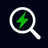

This tab is not a monitored URL — settings here will apply once you open a configured Upwork tab.
Any tab matching these URLs can be independently started. Each tab runs its own timer.
No tabs are being monitored.